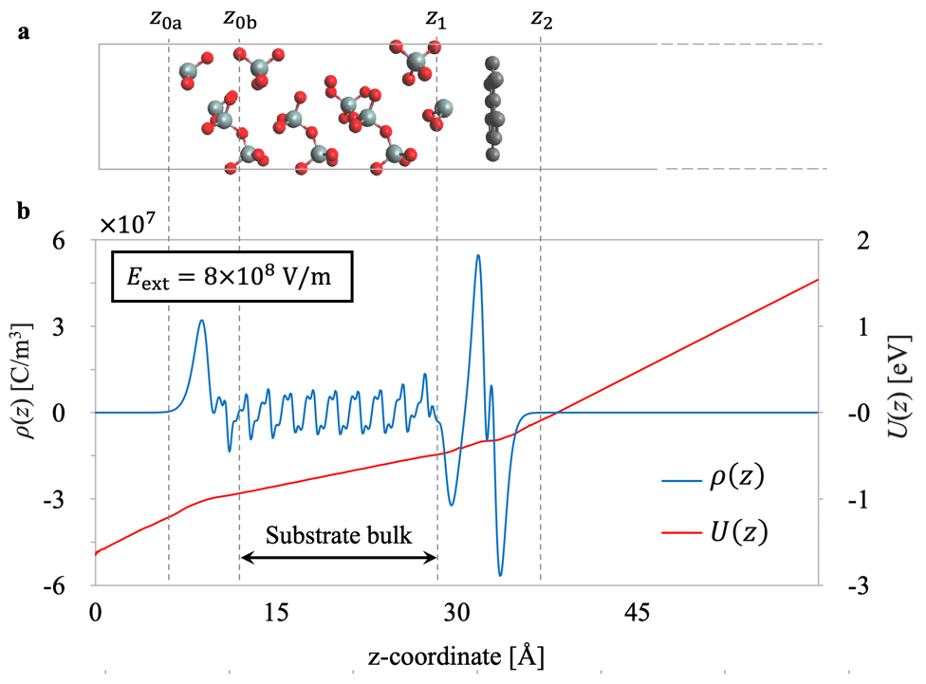
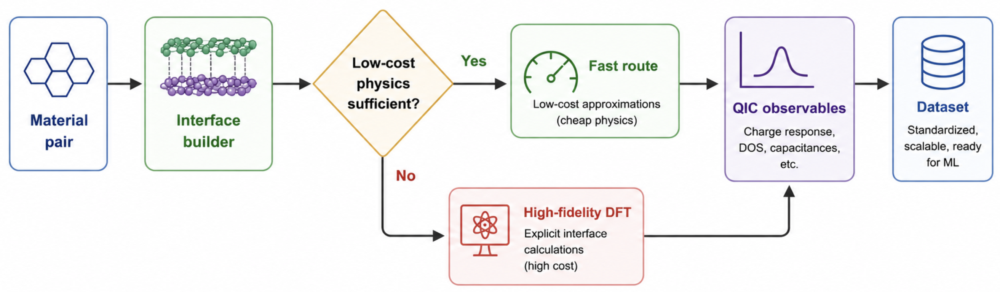
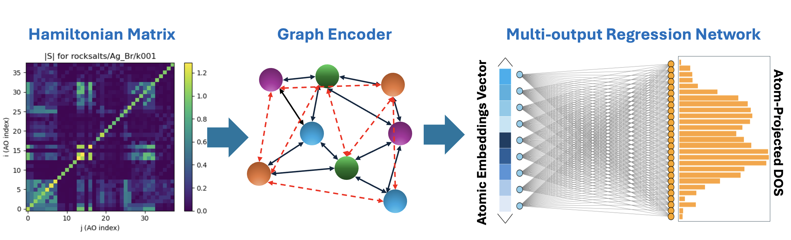

Merck EMD Electronics
Lead scientist on a semiconductor-fabrication collaboration, delivering software workflows that integrate quantum simulations and graph neural networks for rapid organometallic ligand-dissociation energy prediction.
First-Principles Modeling · Scientific Machine Learning · Electronic Structure Theory
Publishing as Kareem M. Gameel
Postdoctoral Scientist, University of Toronto
I develop first-principles quantum chemistry and scientific machine-learning methods for electronic response, nanoscopic interfaces, and materials discovery.
My goal is to bridge the gap between theory and experiment by building a deeper physical understanding of nanoscopic phenomena and translating that understanding into predictive computational models that accelerate discovery.
At the University of Toronto, I work through the Clean Energy Lab, the Acceleration Consortium, and A3MD on industry-facing scientific machine-learning projects for molecular and materials discovery.
 FAIR Chemistry
FAIR Chemistry
 EMD Electronics
EMD Electronics
Lead scientist on a semiconductor-fabrication collaboration, delivering software workflows that integrate quantum simulations and graph neural networks for rapid organometallic ligand-dissociation energy prediction.
Linked experimental oxygen-evolution catalyst measurements with high-throughput DFT, electronic-structure descriptors, and neural network models for Y-based pyrochlore overpotential prediction.
Delivered DFT and ab initio molecular-dynamics modeling of degradation mechanisms in Ni-rich lithium-ion battery cathodes.
My current research program connects physical model development, scalable data generation, and machine learning for electronic response in complex materials systems.

I developed the Quantum Interfacial Capacitance framework, which combines first-principles electrostatic screening with quantum capacitance to predict field response in low-dimensional interfaces.

I study how target formulation, delta learning, and hierarchical learning can reshape difficult first-principles prediction problems into smoother mappings that transfer more reliably across chemistry.

I am developing Hamiltonian-informed representations for electronic structure learning, with emphasis on spectral quantities such as the density of states and response properties in materials interfaces.
My publications span first-principles electronic-structure theory, interfacial capacitance, surface adsorption, DFT+U methodology, and optoelectronic materials, with six published first-author or co-first-author works and one first-author manuscript in progress. Citation counts and the live citation graph are available on my Google Scholar profile.
My graduate research focused on atomistic modeling of nanoscopic interfaces, including transition-metal surface chemistry and electrochemical capacitance in low-dimensional and microporous electrodes.
My postdoctoral work expanded this program toward scientific machine learning for materials discovery, including organometallic precursors for semiconductor fabrication, electrocatalysis, battery materials, graph neural networks, machine-learning interatomic potentials, and automated xTB/DFT workflows.
I work across electronic-structure theory, automated simulation pipelines, and machine-learning models for atomistic systems.